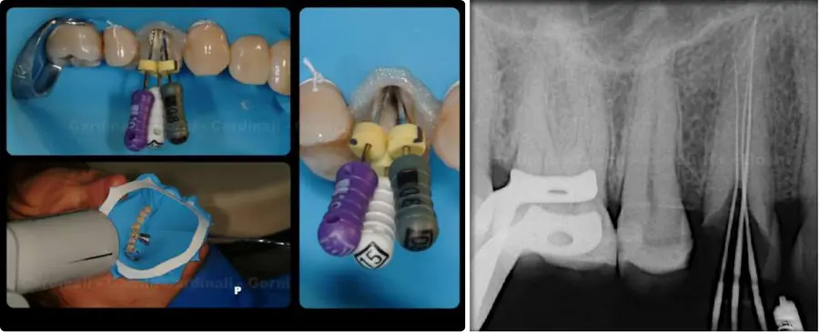

نسخه استخراجشده؛ ترجمه یا تأیید علمی انجام نشده است. وضعیت: captured
قدم 1 · theory
جمعبندی: رابردم در درمان ریشه
پیش از رابردم: بیحسی و آزمودنش، شروع کمعمق دسترسی برای نشانهدار کردن دندان، برداشتن پوسیدگی پروگزیمال؛ در دندان خیلی خمشده تا شاخ پالپ. فایل و بروچ نه.
رابردم: ورق متوسط، فریم رادیولوسنت، تکدندان با بزرگترین سوراخ، تست پایداری و کنترل نشت.
ضدعفونی دندان، کلمپ و ورق اطراف، بعد ورود به پالپ.
رادیوگرافی با پنس و فریم سر جایش؛ تیوب همراستا با دستهی پنس.
چند نکتهی تکمیلی
رابردم در درمان ریشه استاندارد مراقبت است. درصدهای موفقیتی که به بیمار گفته میشود از پروتکلهایی با رابردم آمده است.
در یک بررسی جمعیتی، بقای دندان پس از درمان ریشه با رابردم بیشتر بود. در درمان مجدد، موفقیت با رابردم بیشتر از رول پنبه بود؛ گذاشتن پست زیر رابردم هم موفقیت بیشتری داشت. کارآزمایی تصادفی در این باره نداریم.
رابردم بافت نرم را از فرز، مواد شیمیایی و داروها محافظت میکند، و دندانپزشک و دستیار را هم: آئروسل آلوده کم میشود و بزاق پشت ورق میماند.
اگر پس از باز شدن اتاقک ترمیمی را باید برداری، اول ورودی کانالها و کف اتاقک را با گوتاپرکای موقت ببند تا تکهها به کانال نیفتند.
در سنجش جریان خون پالپ با لیزر داپلر، تا حدود ۸۰٪ سیگنال از پریودنشیوم میآید؛ پریودنشیوم را با ورق رابردم سیاه بپوشان.

در ایزولاسیون چنددندانی، رادیوگرافی با فریم رادیولوسنت و بدون برداشتن ورق گرفته میشود. (Cardinali & Gorni. The Use of the Rubber Dam in Endodontics (StyleItaliano) — Fig. 10–13 (Ch.7))
قدم 2 · question
درصدهای موفقیتی که برای درمان ریشه و درمان مجدد گزارش میشوند، از پروتکلهایی آمدهاند که رابردم جزئی از آنهاست.
۰۱
صحیح
۰۲
غلط
قدم 3 · question
در درمان ریشه، رابردم بافت نرم دهان را از فرز، مواد شیمیایی و داروها محافظت میکند.
۰۱
صحیح
۰۲
غلط
قدم 4 · question
دندانی که پوسیدگی یا ترمیمی ندارد، از درون سوراخ ورق بهآسانی از دندان کناری شناخته میشود و نشانهدار کردنش لازم نیست.
۰۱
صحیح
۰۲
غلط
قدم 5 · question
آزمودن بیحسی با شروع کمعمق تراش پیش از رابردم فقط در روش کلمپ اول سودمند است.
۰۱
صحیح
۰۲
غلط
قدم 6 · question
دانشجویی در ثنایای طرفی بالای بهشدت چرخیده، شاخ پالپ را پیش از رابردم پیدا کرد و ادامه داد تا کانال را با فایل هم پیدا کند، بعد رابردم گذاشت. کجای کار اشتباه بود؟
۰۱
باید پیش از یافتن شاخ پالپ، اتاقک را کامل باز میکرد تا جهت کانالها بهتر و روشنتر دیده شود
۰۲
شاخ پالپ را نباید پیش از رابردم پیدا میکرد؛ در دندان چرخیده هم همیشه اول رابردم میآید
۰۳
پس از یافتن شاخ پالپ باید فوراً رابردم میگذاشت؛ فایل پیش از رابردم ممنوع است
۰۴
اشتباهی نکرده؛ در دندان چرخیده تعیین طول کار با فایل پیش از رابردم هم کاملاً مجاز است
قدم 7 · question
پس از باز شدن اتاقک مولر اول بالا، معلوم شد بخشی از ترمیم کامپوزیت دیستال لق است و باید برداشته شود. پیش از برداشتنش چه میکنی؟
۰۱
ورودی کانالها و کف اتاقک را با گوتاپرکای موقت میبندی، بعد ترمیم را برمیداری
۰۲
ترمیم را با فرز برمیداری و بعد کانالها را با فایل و شستوشو از تکهها پاک میکنی
۰۳
ترمیم را رها میکنی و آن را در جلسهی پر کردن کانال برمیداری
۰۴
رابردم را برمیداری تا ترمیم را بیورق و با دید بهتر برداری
قدم 8 · question
دو دانشجو رادیوگرافی طول کار میگیرند: اولی ورق را از فریم فلزی آزاد میکند و دومی با فریم رادیولوسنت و پنس کار میکند. کدام مقایسه درست است؟
۰۱
کار اولی دقیقتر است، چون فقط نگهدارندهی فیلم درمان ریشه تکنیک موازی را در رادیوگرافی ممکن میکند
۰۲
کار دومی سریعتر است و میدان را پایدار و بینشت نگه میدارد؛ هر دو تکنیک موازیاند
۰۳
کار دومی دوز بیشتری دارد، چون فریم پلاستیکی بخشی از اشعه را جذب میکند
۰۴
هر دو یکساناند و انتخاب فریم هیچ اثری بر روش گرفتن رادیوگرافی ندارد
قدم 9 · question
کلمپ فلزی در رادیوگرافی حین کار ممکن است بخش تاج را بپوشاند، ولی کلمپ پلاستیکی رادیولوسنت است و آن را نمیپوشاند.
۰۱
صحیح
۰۲
غلط
قدم 10 · question
پلاک را پس از گذاشتن رابردم با رابر کپ و پامیس برمیداری تا ورق روی دندان تمیز بنشیند.
۰۱
صحیح
۰۲
غلط
قدم 11 · question
برای لیزر داپلر، ورق رابردم روشن بهترین انتخاب برای پوشاندن پریودنشیوم است، چون نور لیزر را بازمیتاباند.
۰۱
صحیح
۰۲
غلط
قدم 12 · question
کدام یافته دربارهی رابردم در درمان مجدد و گذاشتن پست گزارش شده است؟
۰۱
در درمان مجدد موفقیت با رابردم بیشتر بود، ولی گذاشتن پست زیر رابردم اثری نداشت
۰۲
در درمان مجدد رول پنبه و رابردم نتیجهی یکسانی داشتند، ولی گذاشتن پست زیر رابردم بهروشنی موفقتر بود
۰۳
در درمان مجدد موفقیت با رابردم بیشتر از رول پنبه بود؛ گذاشتن پست زیر رابردم هم موفقتر بود
۰۴
در درمان مجدد و گذاشتن پست، رابردم فقط از بلعیدن ابزار پیشگیری کرد و اثری نداشت
قدم 13 · question
کدام گزاره دربارهی شواهد رابردم در درمان ریشه درست است؟
۰۱
شواهد فقط برای ترمیم کامپوزیت هست و دربارهی درمان ریشه هیچ دادهای در دست نیست
۰۲
کارآزماییهای تصادفی بسیاری برتری رابردم را ثابت کردهاند و بحثی باقی نمانده است
۰۳
بررسیها نشان دادهاند رابردم بر موفقیت و بقای درمان ریشه اثری ندارد و ارزشش فقط جنبهی قانونی دارد
۰۴
کارآزمایی تصادفی در این باره نداریم، ولی بررسیها موفقیت و بقای بیشتری با رابردم نشان دادهاند
قدم 14 · question
مولر دوم پایین بهشدت رو به مزیال خم شده، پوسیدگی عمیق مزیال دارد و قرار است درمان ریشه و ترمیم مزیال در یک جلسه انجام شود. کدام برنامه درست است؟
۰۱
برداشتن پوسیدگی و یافتن شاخ پالپ پیش از رابردم، ایزولاسیون چنددندانی با فریم رادیولوسنت، ضدعفونی، و رادیوگرافی با پنس بیبرداشتن ورق
۰۲
ایزولاسیون تکدندان و برداشتن پوسیدگی زیر ورق، باز کردن اتاقک، برداشتن ورق برای رادیوگرافی، و ورق تازهی چنددندانی برای ترمیم در پایان جلسه
۰۳
برداشتن پوسیدگی و باز کردن کامل اتاقک پیش از رابردم، ایزولاسیون چنددندانی با فریم فلزی، و آزاد کردن ورق از فریم برای هر رادیوگرافی حین کار
۰۴
یافتن شاخ پالپ پیش از رابردم، ایزولاسیون چنددندانی با فریم رادیولوسنت، ورود به پالپ، و ضدعفونی میدان پس از نخستین فایل